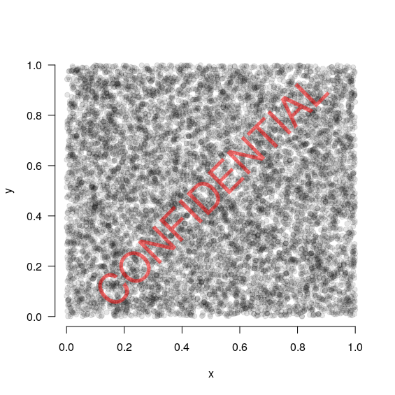

My new watermark function in R 04-06-19
This new function was just a bit of fun. Probably not that useful to most people but I'll probably use it once in a while!
Welcome to the
# Generate some example data
x <- runif(10000)
y <- runif(10000)
# Plot the points
plot(x, y, las=1, bty="n", pch=19, col=rgb(0,0,0, 0.1))
# Add a watermark
watermark("CONFIDENTIAL", col="red")
x <- runif(10000)
y <- runif(10000)
# Plot the points
plot(x, y, las=1, bty="n", pch=19, col=rgb(0,0,0, 0.1))
# Add a watermark
watermark("CONFIDENTIAL", col="red")
You'll get the following plot:
Handy for when you're dealing with sensitive data and you don't want your figures making it to twitter! Take a look at the code here. It is part of my basicPlotteR package.